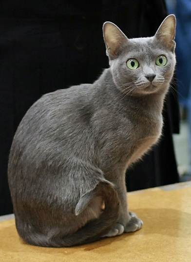

The Korat cat is a shorthair with a stunning silver tipped blue coat that shimmers in the light. It had large, luminous green eyes that capture its charming personality. They are really playful and very intelligent. Their intelligence causes them to want mental stimulation, making interactive toys and puzzles some of their favorites.
